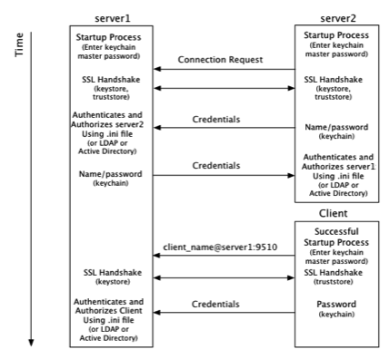

Introduction
Security for the Terracotta Server Array (TSA) is set up using Terracotta configuration, tools provided in the Terracotta kit, standard Java tools, and public key infrastructure (via standard digital X.509 digital certificates). This setup process is described in
Setting Up Server Security.
By default, the keychain script that creates Terracotta keychain files uses an obfuscation scheme to protect passwords. This scheme is adequate for development environments or environments where keychain-file security is already assured.
If your environment requires stronger protection for keychain files, use the encryption scheme described in this page. The encryption scheme requires a master password each time the keychain file is accessed.
Note: | Except for the keychain setup, you must follow the setup instructions, including for authentication and SSL, as described in Setting Up Server Security. |
The following diagram shows where the master password is required in the startup process of a Terracotta cluster.
From the point of view of the Terracotta server, security checks take place at startup and at the time a connection is made with another node on the cluster:
1. At startup, server1 requires a password to be entered directly from the console to complete its startup process. The password can also be
read from a file to avoid manual entry.
2. A connection request from server2 initiates the process of establishing a secure connection using SSL.
3. Server1 authenticates server2 using stored credentials. Credentials are also associated with a role that authorizes server2. The process is symmetrical: server2 authenticates and authorizes server1.
4. A connection request from a Terracotta client initiates the process of establishing a secure connection using SSL.
5. Server1 authenticates and authorizes the client using stored credentials and associated roles. Because a client might communicate with any active server in the cluster during its lifetime, the client must be able to authenticate with any active server. Because active servers can fail over to mirror servers, each client should be able to authenticate against all servers in the cluster.
From the point of view of a Terracotta client, security checks occur at the time the client attempts to connect to an active server in the cluster:
1. The client uses a server URI that includes the client username.
A typical (non-secure) URI is <server-address>:<port>. A URI that initiates a secure connection takes the form <client-username>@<server-address>:<port>.
2. A secure connection using SSL is established with the server.
3. The client sends a password fetched from a local keychain file. The password is associated with the client username.
Note that the diagram and process shown above are similar to those found in
Setting Up Server Security. The main differences, described in this document, concern the use of the keychain file.
 Contact Support
|
Community
|
Feedback
Contact Support
|
Community
|
Feedback